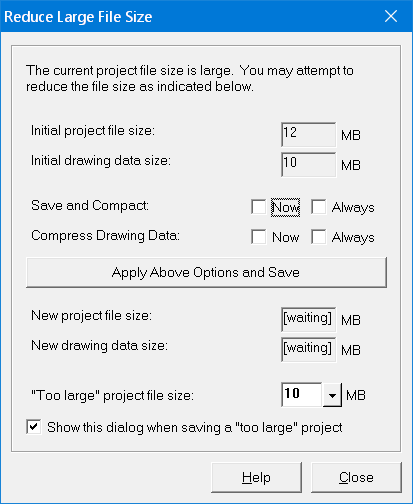

Reduce Large File Size |
  
|
Reduce Large File Size |
|
This dialog optionally opens upon saving a project with a large file size.

Initial project file size: Shows the size of the project file after saving, in MB. This is the file size that prompted Rhvac to open this dialog.
Initial drawing data size: Show the size of the Drawing Board data that was saved in the project file.
Save and Compact, Now: Specifies whether the current project file will be compacted upon clicking the "Apply Above Options and Save" button on this dialog. It is not possible to uncheck this box while the "Always" box is checked.
Save and Compact, Always: Specifies whether all project files will be compacted or not. This checkbox serves the same purpose as the "Keep project file database compacted" checkbox on the Rhvac Options dialog.
Compress Drawing Data, Now: Determines whether the Drawing Board data will be compressed before saving it into the project file. This checkbox only applies to Drawing Board projects in which you chose to save the drawing data within the project file.
Compress Drawing Data, Always: Determines whether the Drawing Board data will be compressed before saving it into the project file. This checkbox only applies to Drawing Board projects in which you chose to save the drawing data within the project file. This checkbox serves the same purpose as the "Compress drawing file when saving, if possible" checkbox on the Drawing Board Options dialog.
Apply Above Options and Save button: Performs another "Save Project" using the settings you specified by the above two "Now" checkboxes. After clicking this button, the new project file size and new drawing data size will be shown in the gray boxes below this button.
New project file size: Shows the new project file size after clicking the "Apply Above Options and Save" button.
New drawing data size: Shows the new drawing data size after clicking the "Apply Above Options and Save" button. If the current project's drawing is not saved within the project file, or if the current project is not in Drawing Board mode, this box says, "N/A."
"Too large" project file size: Specifies the file size required to prompt showing this dialog upon saving. Normally, it's good to keep your project files smaller than around 10 MB. This input serves the same purpose as the equivalent input on the Rhvac Options dialog.
Show this dialog when saving a "too large" project: Specifies whether this dialog will be shown whenever you save a project that exceeds your "too large" file size value. This input serves the same purpose as the equivalent checkbox on the Rhvac Options dialog.
Help button: Opens the help to this topic.
Close button: Closes this dialog without making any more changes. Saves the state of the two "Always" checkboxes on this dialog.